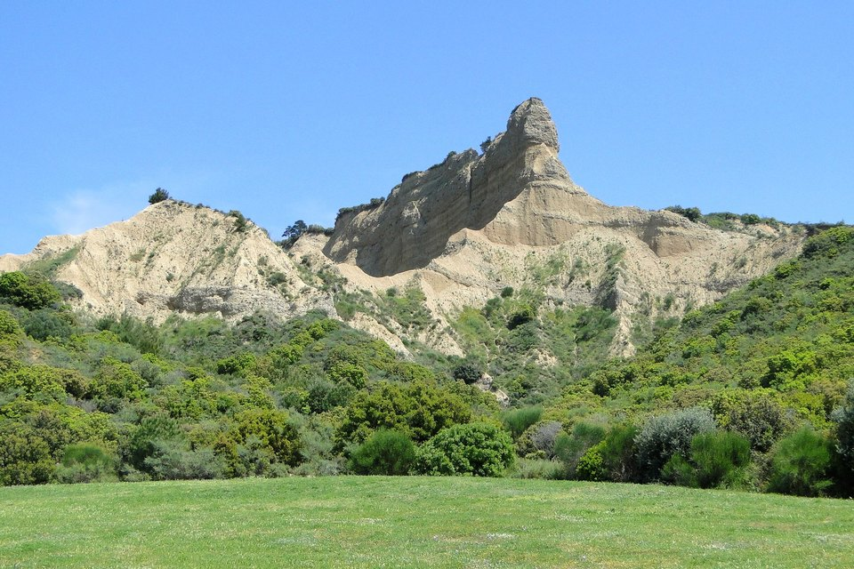
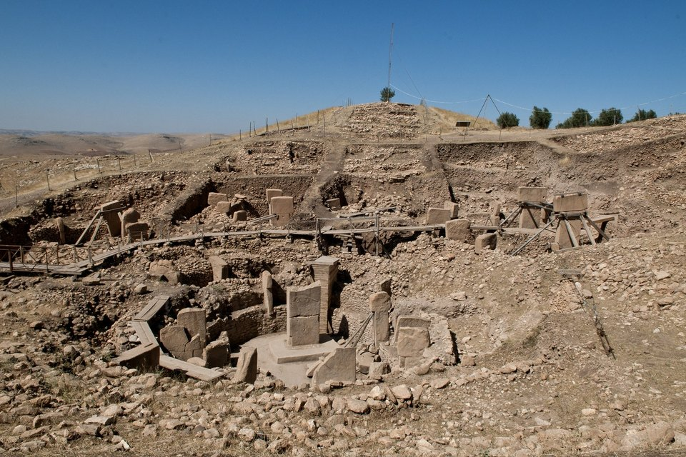
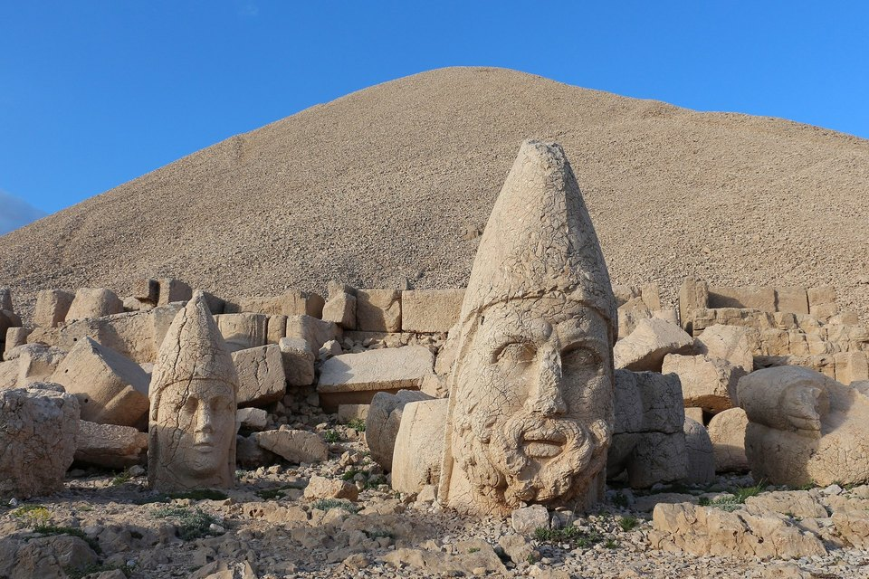
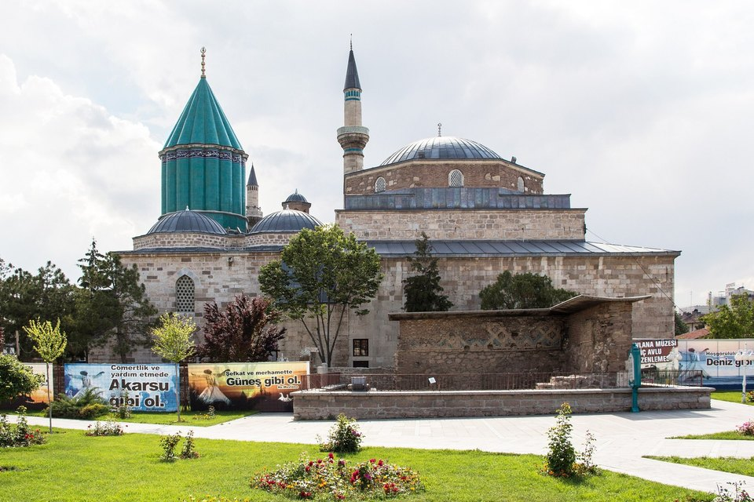
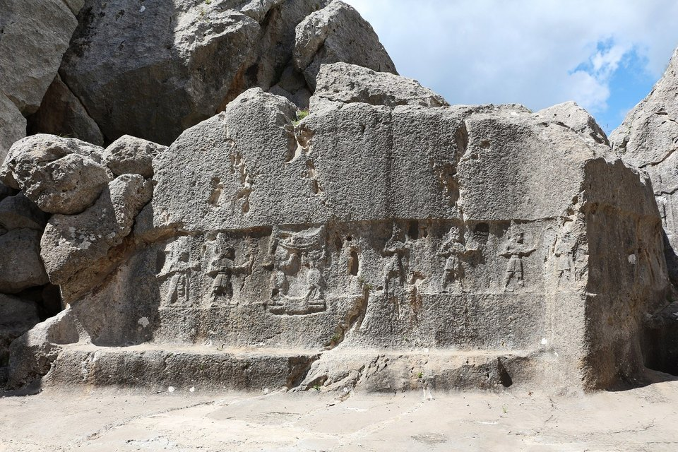
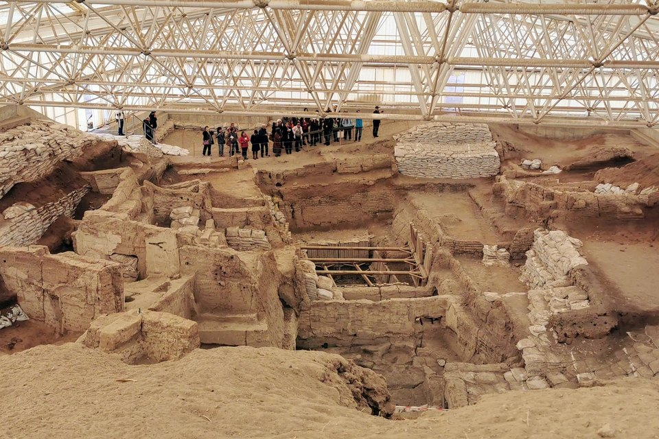
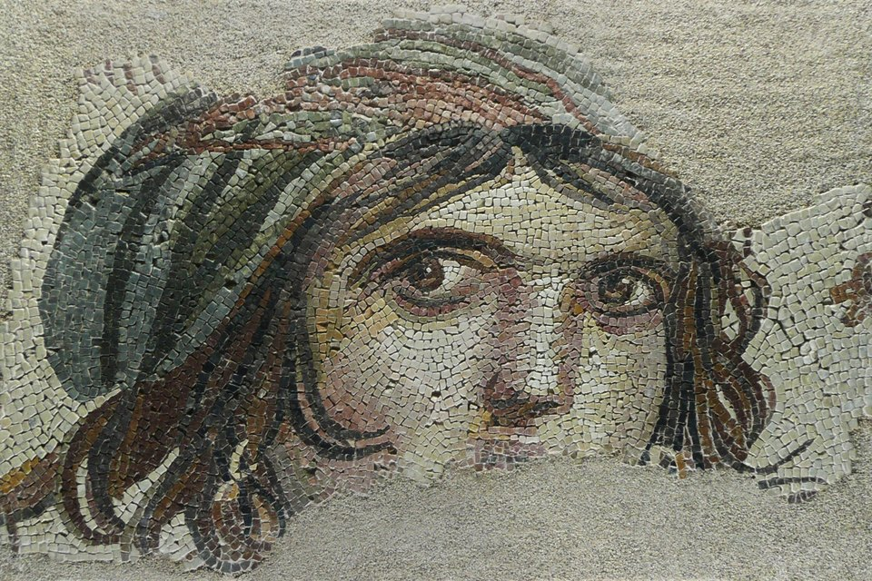

Turkey audio guides
60 guides across Istanbul, Cappadocia, Ephesus, Antalya, Fethiye and Anatolia, recorded in 10 languages. Guides bought on the website play online in your browser (with the read-along script); offline listening and auto-play at each stop are in the free Earwise app. Checkout is not open yet; prices below are the guide prices (Free, €1.99, €2.99, or €3.99).
Istanbul


Cappadocia


Ephesus & the Aegean


Antalya & the Turquoise Coast


Fethiye & Lycia


Anatolia & Beyond

Troy
Tevfikiye

Gallipoli
Eceabat

Göbekli Tepe
Şanlıurfa

Sümela
Maçka

Mount Nemrut
Kahta

Konya & Mevlana
Konya

Ankara: Anatolian Civilizations
Ankara

Anıtkabir
Ankara

Hattusa
Boğazkale

Yazılıkaya
Boğazkale

Çatalhöyük
Çumra

Ani
Kars

Zeugma Mosaic Museum
Gaziantep
No Turkey guide matches that.